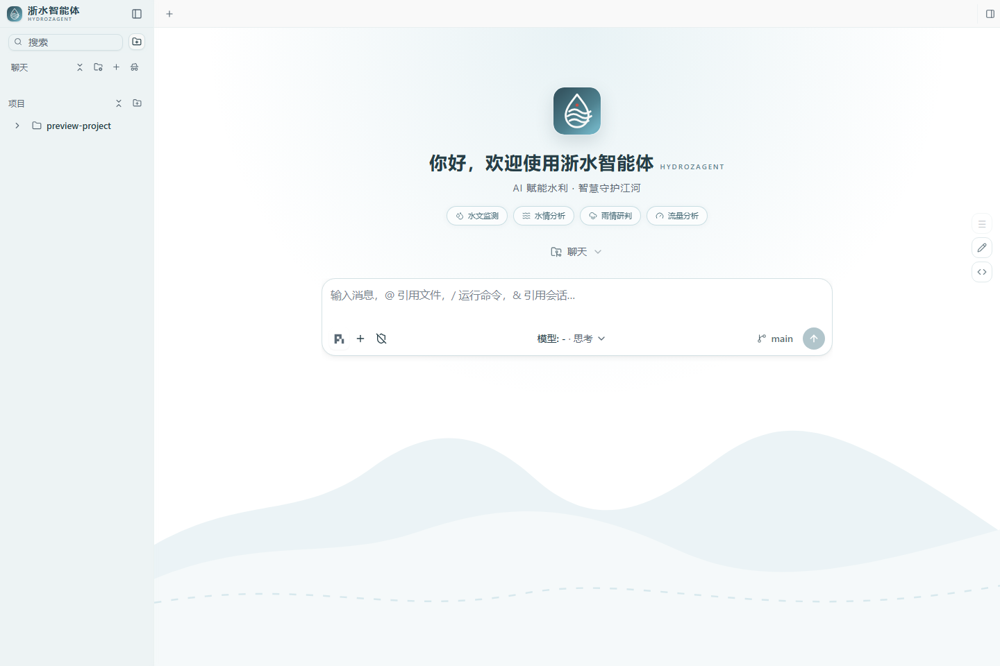

浙水智能体 hydroZagent
A · 领导汇报版
为什么要做 · 产品形态与进展
为什么要做浙水智能体
-
痛点一：水利单位内网下通用 AI
不可用——数据出不了内网，专业能力进不来
-
痛点二：水利专业分析、办公文档、数据可视化、知识检索、系统运营散落多工具，割裂低效
-
定位：面向水利单位内网的综合业务智能体；以成熟开源 coding
agent（pi）为底座，把"写代码"扩展到防汛日报、水情分析、合规文档、系统巡检等全日常工作面
-
价值：数据不出内网、安全可控；一个 agent
覆盖六大业务面，降本提效；基于成熟开源底座，自主可控可演进；契合单位现有工作流
产品形态与进展
-
形态：Electron 桌面工作台 +
局域网 Web
共享；用户拿到的是"浙水智能体"一个产品，不是多个工程拼装
-
架构四层：桌面工作台 → Agent
运行时(pi) → 模型与协议 → 服务能力
-
入口 apps/desktop · 运行时 packages/coding-agent · 协议
ai/agent/protocol · 服务 server/client
-
能力总览：Coding 代码 · 水利 ·
文档 · 数据 · 运营 · 知识 六大类
-
当前进展：统一品牌与青碧朱砂视觉 ✓ · 水文/水情/雨情/防汛词条 ✓ · 内网 Web
共享 ✓ · 开发模式可用 ✓
-
下一步：水利技能包深化 ·
文档模板与渲染检查 · 正式发行版打包(desktop:dist)
以 pi 为底座的水利内网综合智能体
-
idea：把能"写代码、调用工具、跑会话"的成熟 agent
运行时(pi)搬进水利单位内网，并从编码扩展到六大业务面
-
为何选 pi：成熟开源 coding
agent
运行时——工具调用/会话执行/技能扩展/LSP/测试，不重复造轮子，可控演进
-
六大任务类别自动路由（架构创新点）：Coding 代码 · Hydro 水利 · Document 文档 · Data 数据 ·
Operations 运营 · Knowledge 知识
-
跨类别可叠加：如"根据水情数据生成防汛日报"= Hydro + Data +
Document
-
置信度不足时集中问 1–3 个关键问题，不猜后动手
架构与工程纪律
- 产品架构（四层）：
-
用户入口 apps/desktop —— Electron
桌面工作台、项目会话管理、水利品牌 UI、内网 Web 服务
-
Agent 运行时 packages/coding-agent ——
工具调用、会话执行、技能与扩展
-
模型与协议 packages/ai · agent · protocol
-
服务能力 packages/server · client
-
验收纪律：有修改就要有验证（代码→LSP/测试、UI→截图、文档→渲染检查、数据→合理性）；不伪成功，最多自动补
2 轮，仍失败则交付未完成项+原因
-
水利专项：标准术语与单位（流量
m³/s、水位注明高程系）；引用必须注明来源与版本；高风险结论标注"建议专业人员复核"
-
现状：开发模式可用 npm run
desktop:dev；desktop:dist 可打包含 Agent 运行时的发行版
C · 外部路演版
愿景 · 六大能力 + demo
AI 赋能水利 · 智慧守护江河
-
定位：面向水利单位内网的综合业务智能体
-
差异化：同一个
agent，既能写代码上线，也能写防汛日报、做水情分析、出合规文档、巡检系统——把
agent 能力下沉到水利单位全日常工作面
-
为什么是现在：成熟开源 coding
agent(pi)已可用；水利数字化与内网安全并举；单位对"能干活、不出内网"的
AI 需求明确
-
不做什么：不依赖外网通用
AI；不把数据送出内网；不做单一割裂工具
六大能力 + demo + 路线图
- 六大能力矩阵：
-
Coding 代码 · Hydro 水利专业分析与报告
-
Document 文档生产 · Data 数据分析与可视化
-
Operations 系统运营辅助 · Knowledge 内网知识检索
- 路线图 / 合作切入点：
-
水利技能包（水文/防汛/调度/预警）共建
- 单位文档模板与公文规范接入
- 内网知识库与数据源对接

桌面工作台截图
（文件不存在）
';
"
/>
桌面工作台 demo
我们要做成什么
-
定位：面向水利单位内网的综合业务智能体；coding
是重要能力之一，同时承担水利专业、办公生产、数据分析、系统运营、知识服务
- 目标边界：
-
做：编码能力接近成熟 coding
agent；在水利专业、内网集成、文档生产、单位日常工作上形成差异化
-
不做：DSH、桌宠不进入产品入口与默认运行时；不依赖外网通用
AI
-
架构一句：桌面工作台
apps/desktop → RPC 子进程 → packages/coding-agent(pi 运行时) →
ai/agent/protocol
-
产品边界：用户拿到"浙水智能体"一个产品；完整发行物必须经 desktop:dist
生成
现状 · 分工 · 下一步
- 现状（完成度）：
-
品牌：统一名称/徽标/启动页/青碧朱砂主题 ✓
-
水利适配：水文/水情/雨情/流量/水位/水库/河网/防汛/预警 词条
✓
-
内网 Web 共享（核心能力不回退）✓
-
开发模式可用；Pi Agent 运行链路默认启用 ✓
-
分工（粗）：Agent
核心(packages) / 桌面工作台(apps/desktop) / 水利技能与领域服务
-
下一步优先级：水利技能包深化 →
文档模板与渲染检查 → 正式发行版打包
-
风险 / 待办：水利知识源与数据源对接；发行版跨平台打包验证
← → 切换页 1-4 切换版